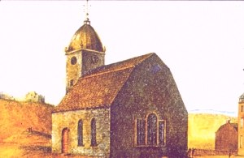

|
 What today has become St. Peters Episcopal Church grew out of a need to provide an English language cultural center in still Dutch Albany. This long-standing Albany institution had its roots in the 1690s when the Reverend John Miller was sent to serve as chaplain to the English soldiers at the Albany fort. In 1695, Miller described the state of province and outlined a plan for an Anglican ministry to serve and catechize in Albany and beyond. However, no minister was sent for almost a decade and the growing multi-ethnic population at Albany was served almost exclusively by the dominie of the Dutch Reformed Church. In 1704, newly ordained Thoroughgood Moor was sent to New York. By November, had taken up his post at Albany. He also was commissioned to perform missionary services among the Mohawks. Enjoying some success among the garrison and visiting Native Peoples, Moor was mostly frustrated by the lack of general provisions for his work and left within a year. Those duties lapsed until the arrival of Thomas Barclay in 1708. Suffering the same situational shortcomings that plagued his predecessor, the middle-aged Barclay proved more determined to minister to the garrison, catechize the local settler population, and maintain a mission among the Indians. The initial phase of Barclay's ministry was an immediate success. Settling in Albany and raising a family, by 1714 he had gained a real toehold and sought to move his ministry to the next level. In May, Barclay and the Albany "church wardens" received a license from the governor to solicit contributions to build a church. In October, they received a royal patent for a church plot to be located in the middle of upper Jonker (State) Street. Because the land fell within the bounds of the city of Albany , the Albany corporation immediately challenged legality of the British patent. After some negotiation and diplomacy, the church was built and was well-subscribed with support from Albany and regional Anglicans, other local well-wishers, and royal officials including Governor Robert Hunter. After preaching for several years in a run-down building belonging to the Dutch church, Barclay met his parish in the new church in November 1716. This church building of "very handsome stone . . . 58 feet in length and 42 in breadth" sat in the middle of upper State Street and served Albany's Anglicans until it was replaced and removed in 1802. During Barclay's illness and decline, few services were held in the new church - the parish being loosely cared for by priests from the Fort Hunter mission and New York City. Following repeated remonstrances from the officers at the fort, Reverend John Milne was engaged and arrived at St. Peters in 1728. Milne set to work rebuilding the parish - adding a pulpit and increasing the number of communicants. A fire damaged the church in March 1731. The next year, a school for negroes was operated by Albany schoolmaster and church warden John Beasley. After ten outstanding years at Albany and on the frontier, John Milne retired to New Jersey and recommended Mohawks missionary and Albany native Henry Barclay to be his successor. Understanding the broad-based nature of his calling, Barclay spent considerable time in the Indian country and the outlying settlements, while engaging John Oliver to act as his Albany clerk and to care for the church. Henry Barclay was so outstanding on the frontier (particularly in his efforts to combat alcoholism among Indians and settlers) that he was called to Trinty Church in New York City on the death of its rector in 1746. During those years, the Albany church was administered by an outstanding vestry headed by warden Edward Collins. Barclay's hand picked successor was New York-born John Ogilvie - a graduate of Yale, who was ordained and licensed in England, and who took up residence at St. Peters in February 1750. At that time, his calling was still characterized as "the Albany mission." The affable and able Ogilvie led St. Peters' resurgence - heading the list of subscribers for capital improvements in 1751. Ogilvie's tasks were complicated by a renewal of hostilities with France in 1755 which turned Albany into a military headquarters for the next five years. St. Peters welcomed soldiers - marrying them and interring the dead in the church plot until it became necessary to build a larger church cemtery in 1756. Oglivie continued to minister to the Indians - often travelling deep into Mohawk country. As the war escalated, he also served as chaplain to the British and colonial troops encamped in and around Albany. By the end of the war, John Ogilvie was with the British army more than at St. Peters and he left Albany to serve in Canada in 1761. A list of church members made in 1771 has been preserved in the Sir William Johnson Papers. It provides a snapshot of parish members on the eve of the American Revolution. The history of the next thirty years (during which the church was closed and then reborn as an Episcopal church) will be added in the near future! The location of the church is shown on a number of city maps made during the 1760s, 1770s, and 1790s.
Rectors at St. Peters: Thomas Barclay (1708-26)*John Milne (1727-34) Henry Barclay (1738-46) John Ogilvie Thomas Brown Harry Munro Thomas Ellison The only known image of the first St. Peters is a detail taken from a watercolor probably produced by James Eights during the 1840s or 50s. The standard source is still Joseph Hooper's A History of Saint Peter's Church in the City of Albany (Albany, 1900). Our summary of the church's early history follow's Hooper's outline and is closely connected to the lives of its ministers and members. The role of St. Peters as a cultural center for English-speaking peoples and in connection with the British military presence in Albany leads our explanation of its history. Sources: Transcriptions of some early records have appeared online but now seem only to be available in printed form. Some St. Peter's burials have been presented in online form. The chaplain's position at the fort may have been established as early as 1674. The Reverend Charles Wolley (Anglican minister to the garrison at New York) is said to have "officially visited" the Albany garrison in 1678. The classic history of the SPG is now online. Barclay wrote to London on September 26, 1710: "As I did begin from my first coming to Albany, so I go on to catechise the youth, and it hath pleased God to bless my weak endeavours that way, for a great many Dutch children, who at my first arrival were altogether ignorant of the English tongue can distinctly say our catechism and make responses at prayers. every Sunday after the second lesson at evening Prayer I explain some part of the catechism in as plain and familiar manner as I can shunning all controversies, teaching them such fundamental doctrines as are necessary and tend most to promote piety and a good life. I have taught the scholars the prayers appointed for charity schools, and I have used all possible ..." The other names on the license were church wardens Captain Peter Matthews and John Dunbar. In November 1729, Milne reported that "his congregation is increased; that the number of his communicants at Easter last were 34, that he had baptised 10 children and 2 adults, one of these a negroe man. Then he has been again to visit the Mohawk Indians, administered the Sacrament to ten, and baptised two English and three Indian children there." *Dates of tenures are approximate!
first posted: 2000; last revised 3/4/08 |
{kind=link}